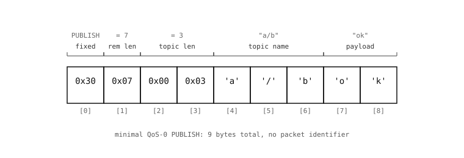

9.18. MQTT, bayt bayt¶
Bu noktada kameranın açık internette gerçek bir hizmetle konuşmak için ihtiyaç duyduğu her parça mevcuttur: bir TCP soketi, onu sarmalayacak TLS, eşi adlandıracak DNS ve bağlantı açıkken aynı betiğin başka işler yapmasına izin veren asyncio. MQTT, tüm bunları gerçek bir ürünün gerçekten kullandığı bir şeye dönüştürüp bir araya getiren ilk hat protokolüdür.
Bu sayfa protokolün kendisini ele alır – hat üzerindeki biçimi, her katılımcının oynadığı rolleri ve tasarımındaki ödünleşimleri – ve bunu, paket içindeki mqtt istemcisinin bir inanç sıçraması yerine zaten bilinen şeyin bariz bir sarmalaması gibi görünmesini sağlayacak kadar dürüstçe yapar.
9.18.1. Yayın/abonelik (pub/sub) ve istek/yanıt karşılaştırması¶
HTTP – çoğu kamera projesinin ilk başvurduğu protokol – istek/yanıt biçimindedir. Bir istemci belirli bir sunucudan belirli bir kaynak ister; sunucu yanıt verir. Her alışveriş bire birdir ve her iki uç da birbirinin adresini önceden bilir.
MQTT yayın/abonelik (publish/subscribe) biçimindedir. İstemciler ortadaki broker adı verilen bir üçüncü tarafa bağlanır. Bir yayıncı (publisher), kimin dinlediğini bilmeden veya umursamadan, adlandırılmış bir konuya (topic) mesaj gönderir. Bir abone (subscriber), broker’a hangi konuları istediğini söyler ve o konulara yayınlanan her mesajı bundan sonra alır. Broker dağıtımı yapan taraftır: yard-cam/motion üzerine yapılan bir yayın, ister sıfır, ister bir, ister elli tane olsun, yard-cam/motion konusuna abone olan her cihaza ulaşır.
Bu model değişikliğinden üç şey çıkar:
Ayrışma (decoupling). Yayıncıların abonelerin var olduğunu bilmesine gerek yoktur. Aboneler, yayıncı fark etmeden gelip gidebilir. İkinci bir gösterge paneli eklemek, yeni gösterge panelinde tek satır koddur; kamera değişmez.
Dağıtım (fan-out). Broker her kopyayı işler, böylece kaç cihazın okuduğuna bakılmaksızın kamera tek bir paket gönderir. MQTT’nin tasarlandığı kullanım durumu budur.
Asimetri. Broker artık zorunlu bir altyapı parçasıdır – onsuz protokol çalışmaz. Ev projeleri için bu genellikle ücretsiz bir genel broker (
test.mosquitto.org,broker.hivemq.com) veya kendi çalıştırdığınız küçük bir broker’dır.

9.18.2. Konular (topics)¶
Konular eğik çizgiyle ayrılmış dizelerdir. Gelenek, en geneli solda, en özeli sağda olacak şekildedir:
yard-cam/motion
yard-cam/temperature
workshop-cam/motion
workshop-cam/temperature/sensor-3
Aboneliklerde iki joker karakter çalışır (yayınlarda değil):
+tek bir seviyeyle eşleşir.+/motionher kameranın motion konusuna abone olur;yard-cam/+her yard-cam alt konusuna abone olur.#bir veya daha fazla sondaki seviyeyle eşleşir.yard-cam/#,yard-cam/motion,yard-cam/temperature,yard-cam/temperature/sensor-3veyard-cam/altındaki diğer her şeye abone olur. Aboneliğin sonunda yer almalıdır.
Konu dizeleri büyük/küçük harfe duyarlıdır. Spesifikasyona göre baştaki bir $ işareti, yayıncıların yazmaması gereken broker dahili konularını ($SYS/...) belirtir.
9.18.3. Paket biçimi¶
MQTT, TCP üzerinde çalışır. Her kontrol paketi tek baytlık bir sabit başlık (fixed header) ile başlar, ardından değişken uzunluklu bir Kalan Uzunluk (Remaining Length) alanı, sonra pakete özgü bir değişken başlık (variable header), sonra da yük (payload) gelir. Aynı dış biçim her komutu kapsar – CONNECT, PUBLISH, SUBSCRIBE, PUBACK, DISCONNECT ve geri kalanı – ve bir MQTT istemcisinin birkaç yüz satırda yazılabilmesinin nedeni budur.

Sabit başlık tek bayttır:
7..4 bitleri kontrol paketi türüdür.
0x3PUBLISH’tir (yani ilk bayt genellikle0x3?ile başlar).0x1CONNECT,0x2CONNACK,0x8SUBSCRIBE,0xCPINGREQ,0xEDISCONNECT vb.’dir.3..0 bitleri pakete özgü bayraklardır. PUBLISH için bayraklar, DUP yeniden iletim bayrağını, QoS seviyesini (2 bit) ve RETAIN bayrağını kodlar.
Kalan Uzunluk, kendisinden sonraki her baytı sayan 1 ila 4 baytlık değişken uzunluklu bir tam sayıdır. Her baytın en üst biti bir devam işaretidir – 1, “başka bir uzunluk baytı geliyor” demektir, 0 ise “bu sonuncusu” demektir. 128’in altındaki bir uzunluk tek bayta sığar; daha büyük yükler daha fazlasını kullanır. Kodlanabilen maksimum uzunluk 256 MiB’dir.
Bir PUBLISH için değişken başlık, konu adıdır – 2 baytlık bir uzunluk, sonra UTF-8 baytları – ve bunu yalnızca QoS 1 veya 2 olduğunda var olan 2 baytlık bir paket tanımlayıcısı izler. Kalan baytlar yüktür ve protokol tarafından opak baytlar olarak ele alınır.
ok mesajının a/b konusuna gönderilen minimal bir QoS-0 PUBLISH’i şudur:
30 07 00 03 'a' '/' 'b' 'o' 'k'
30– PUBLISH, tüm bayraklar sıfır.07– 7 bayt geliyor.00 03– konu uzunluğu 3.'a' '/' 'b'– konu.'o' 'k'– yük.
Hat üzerinde dokuz bayt ve mesaj broker üzerinde a/b konusuna abone olan her cihaza iner.
9.18.4. QoS seviyeleri¶
Hizmet Kalitesi (Quality-of-Service), teslimatı sağlamak için broker’ın (ve istemcinin) ne kadar çaba göstereceğini kontrol eder. Üç seviye:
QoS 0 – en fazla bir kez. Gönder ve unut. PUBLISH paketi gönderilir ve hiçbir zaman onaylanmaz. TCP teslim ederse broker iletir. Bağlantı gönderim sırasında kopar ise mesaj kaybolur. Çoğu sensör telemetrisi QoS 0’da sorunsuzdur – her 30 saniyede bir veri yayan bir akıştaki tek bir kaçırılmış sıcaklık okuması önemli değildir.
QoS 1 – en az bir kez. Yayıncı bir paket tanımlayıcısı ekler ve bir PUBACK bekler. Bir zaman aşımından önce hiç PUBACK gelmezse, yayıncı DUP bayrağı ayarlanmış halde yeniden iletir. Broker, aynı mesajı aynı seviyedeki bir aboneye iki kez teslim edebilir; abonenin kopyaları işlemeye istekli olması gerekir.
QoS 2 – tam olarak bir kez. Dört adımlı bir el sıkışma (PUBREC / PUBREL / PUBCOMP), yeniden bağlanmalar boyunca bile mesajın tam olarak bir kez inmesini sağlar. Gidiş-dönüşler ve broker durumu açısından maliyetlidir. Çok az kamera uygulaması buna ihtiyaç duyar.
Paket içindeki mqtt istemcisi QoS 0 ve QoS 1’i uygular; QoS 2 isterseniz hata fırlatır. Sensör okumalarını raporlayan bir kamera için QoS 0 neredeyse her zaman doğru yanıttır.
9.18.5. Saklanan mesajlar ve son vasiyet (last will)¶
İki özelliği bilmeye değer, çünkü broker’ın konunuz hakkında neyi hatırladığını değiştirirler.
RETAIN. Bir PUBLISH’in RETAIN bayrağı ayarlanmışsa, broker mesajı saklar ve abone oldukları anda gelecekteki her aboneye iletir. MQTT’nin “şu anki değer nedir?” sorusunu ele alma şekli budur – bir sensör en son okumasını saklanan olarak yayınlar ve on dakika sonra abone olan bir gösterge paneli, bir sonraki yayını beklemek yerine yine de en güncel değeri alır. Aynı konuyla yeniden yayınlamak saklanan değerin üzerine yazar; boş bir yük yayınlamak onu temizler.
Son vasiyet (last will). Bir istemci bağlandığında broker’a bir “son vasiyet ve ahit” verebilir: bir konu, bir yük, bir QoS ve bir retain bayrağı. O istemci düzgün olmayan şekilde bağlantısını keserse – TCP RESET, güç kaybı, DISCONNECT paketi olmadan ağ kopması – broker vasiyeti istemci adına yayınlar. Aboneler bunu kameranın çevrimdışı olduğunun bildirimi olarak görür. Kameranın kendisi vasiyeti hiçbir zaman göndermez; broker gönderir, çünkü o zamana kadar kamera gitmiştir.
9.18.6. Keepalive ve yeniden bağlanma¶
CONNECT, saniye cinsinden bir keepalive aralığı taşır. İstemci bu kadar süre sessiz kalmışsa, broker onu ölü kabul eder. Bunu önlemek için istemci periyodik olarak bir PINGREQ (tek bayt: 0xC0) gönderir ve karşılığında bir PINGRESP (0xD0) alır – protokolün taşıyabileceği en küçük, en ucuz kalp atışı. Çoğu kamera uygulaması keepalive’ı 30 veya 60 saniyeye ayarlar.
TCP bağlantısı koparsa, her iki taraf da fark eder ve sıfırdan yeniden bağlanır. İstemci bağlanırken bir kalıcı oturum (persistent session) kullanmadıkça, kopuştan önce yapılan abonelikler kaybolur; basit kamera uygulamaları için yeniden bağlanmada yeniden abone olma deseni daha kısa ve aynı derecede iyidir.
Bu, MQTT spesifikasyonunu okumak veya bir socket.socket üzerinde elle bir istemci yazmak için yeterlidir. mqtt içindeki paketlenmiş istemci tam olarak bunu yapar, ayrıca uygulama kodu için makul bir API sunar.